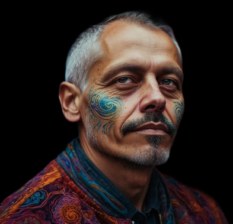

Quiet places, framed slowly
Workation at the edge of the world — Faroe Islands and Iceland, three months each, camera always near.
Workation & Remote Life
The idea behind workation is simple: work from a place that inspires you, and let the place seep into your daily life. I spent three months working remotely from the Faroe Islands and three months from Iceland in winter — not as a tourist, but as a resident who happens to have a camera and a deadline.
Living in these places rather than visiting them changes everything. You photograph the ordinary — morning light on a fjord, the same road in three different weathers, a seal watching you with complete indifference from the shore. Slowly, the extraordinary becomes familiar, and the familiar becomes worth photographing.


Iceland — A Different Kind of Stay
The Icelandic winter was different in nature from the Faroes — closer to a spiritual retreat. A remote but comfortable cabin, far from any town, with nothing visible but lava fields, geothermal steam, and the night sky. Working during the short daylight hours, walking at dusk, photographing the light at both ends of a very brief day.
The silence there has a texture. You stop missing the city surprisingly quickly.
Catravel / Chatourisme
A project taking shape quietly in the background: a travel guide for cat lovers. Catravel in English, Chatourisme in French. A book about destinations, cafés, shelters, islands known for their cats, and the particular way felines inhabit different cities and landscapes. More details when it's ready.